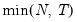
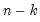
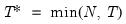
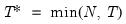

|
|
|
), “size” (), “user” (user specified value), where
is the number of series and
is the number of observations.
rather than ).
The first line creates a group named g1 containing the four series x1, x2, x3, x4. The second line produces a view of the basic results for the principal components. The output view is stored in a table named tab1, the eigenvalues in a vector named v1, and the eigenvectors in a matrix named m1.See “Principal Components” for further discussion.
 and let ; then the default maximum lag is given by
and let ; then the default maximum lag is given by